Performance art / dream archive / XR
Dream Collection Agency
Dream Collection Agency is a performance art project developed as a faux company that collects, catalogues, and recreates dreams in virtual reality.
Project overview
Dream Collection Agency sits between installation, immersive media, speculative design, and archive-building. Built as a fictional corporate structure, the project explores what happens when private dream life is processed as data, memory, and public experience.
Through performances, interfaces, recordings, visual systems, and XR environments, the project translates dream material into shared form — making the subconscious navigable, documentable, and strangely social.
It asks a set of recurring questions: what happens when dreams are collected at scale? How does memory shift when it is externalized? And what kinds of emotional or political residue remain once dream material is formalized into media?
In collaboration with Kevin Byrd & Dale Adams.
Video
Screenland / Red Bull TV feature
Dreamer's Dilemma documents Dream Collection Agency within Red Bull TV's Screenland series, tracing the project through shared dreaming, virtual reality, and the unstable line between inner life and public media.
Gallery
Documentation and stills from Dream Collection Agency.
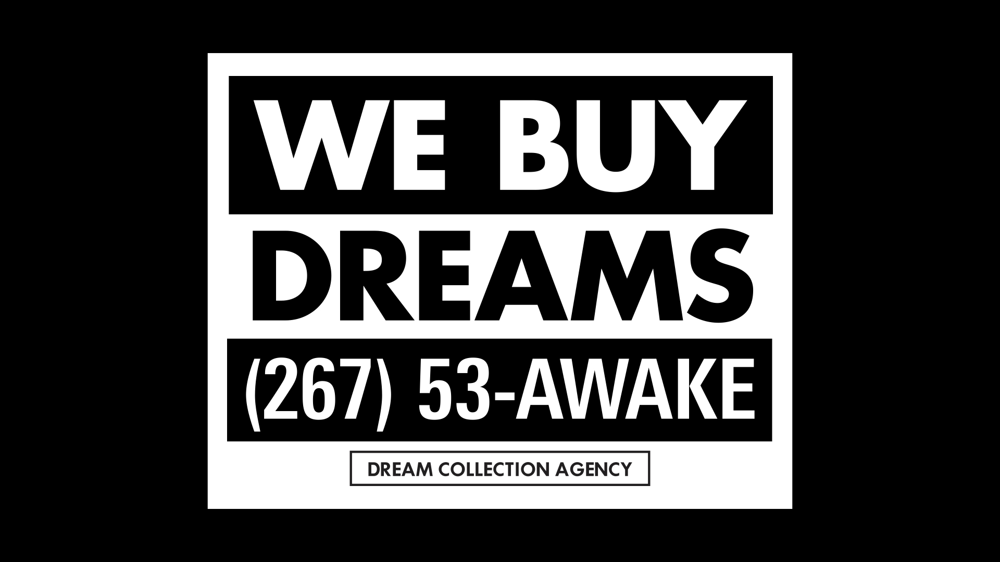
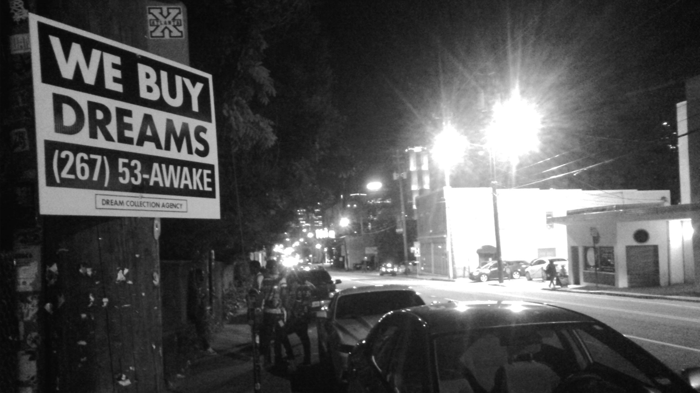
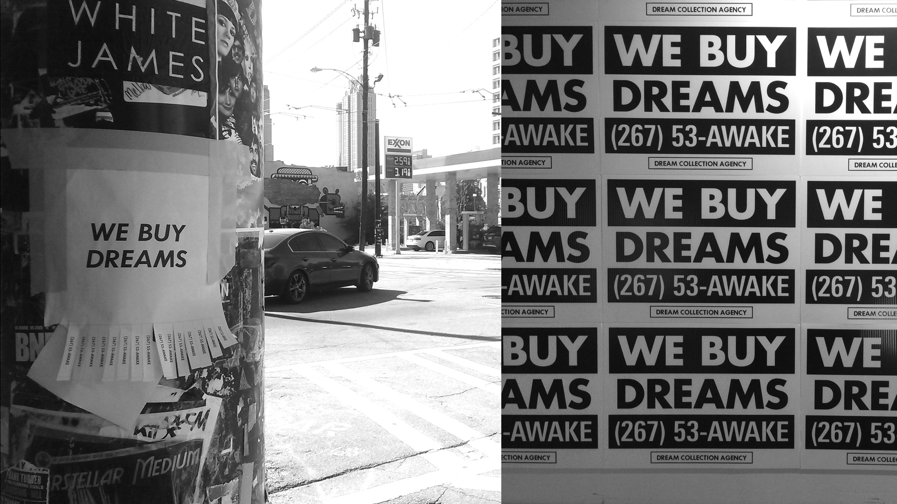
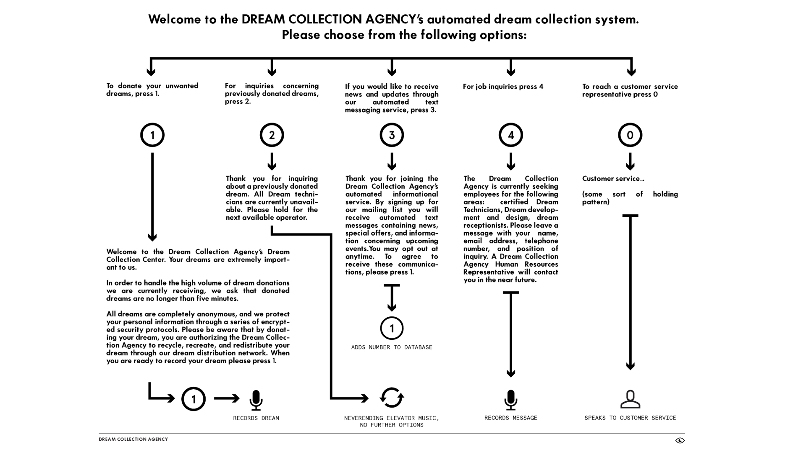
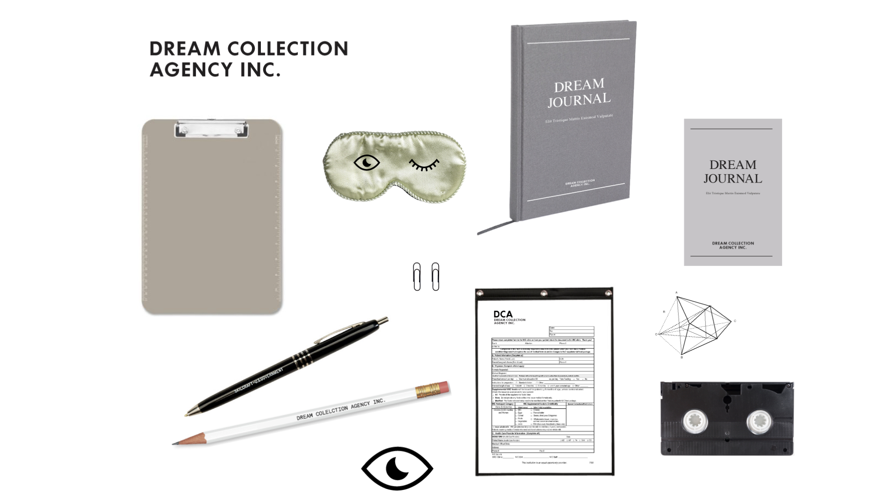
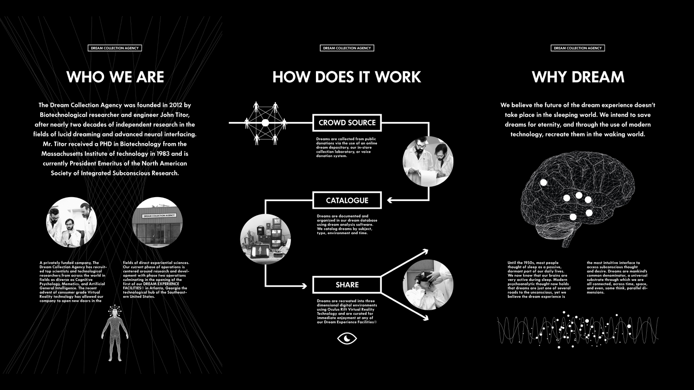
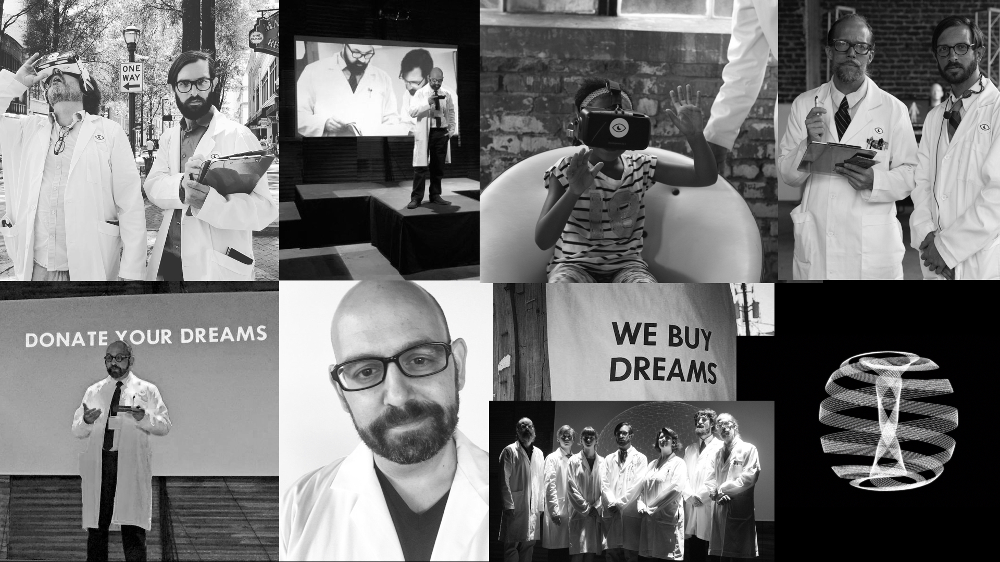
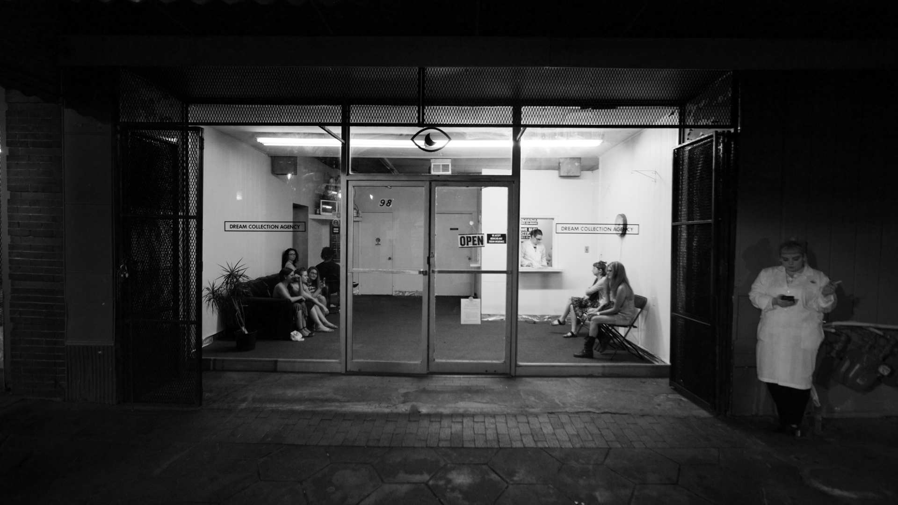
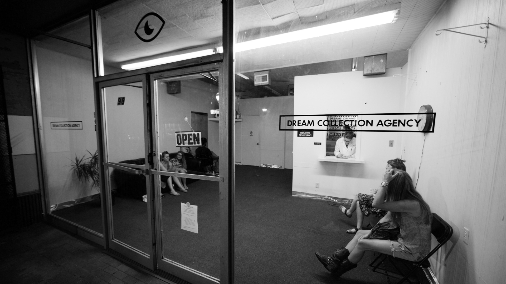
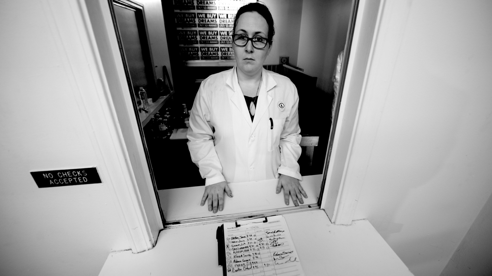
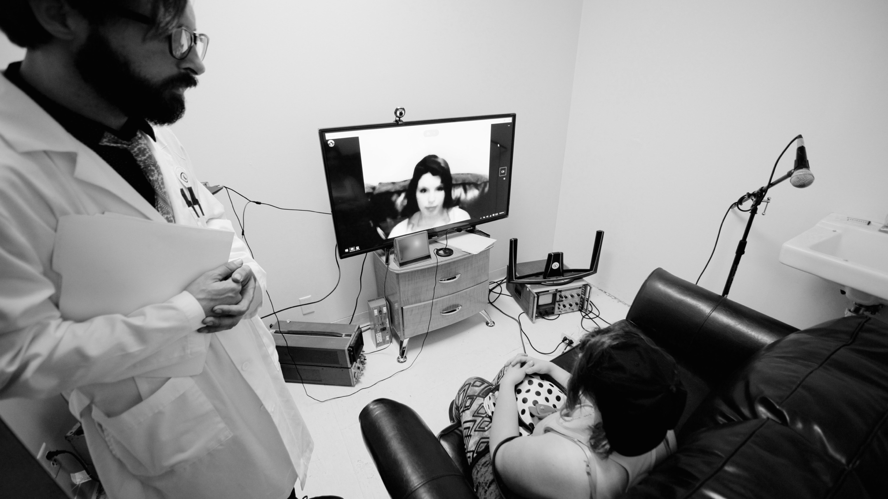
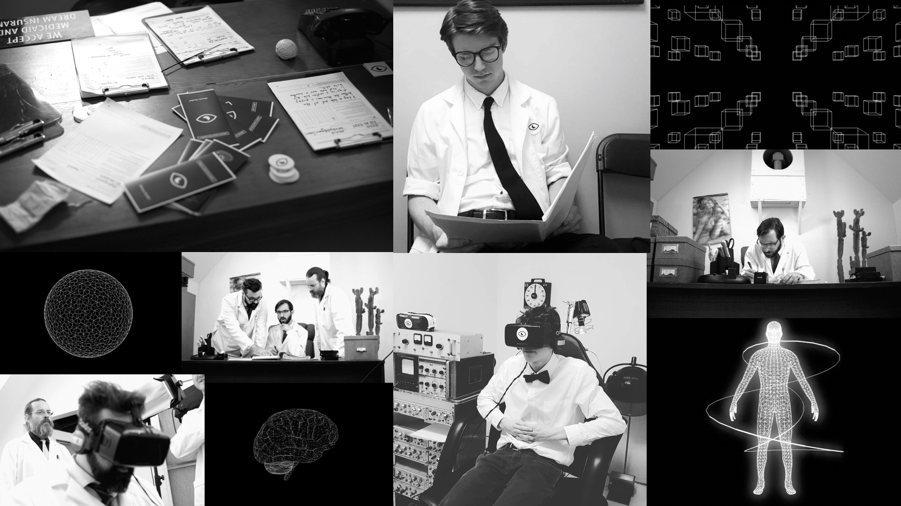